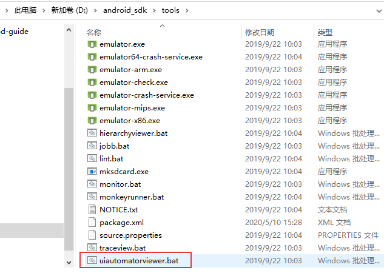
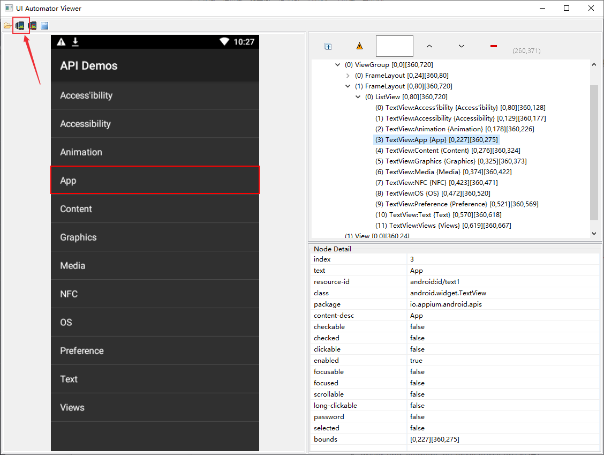
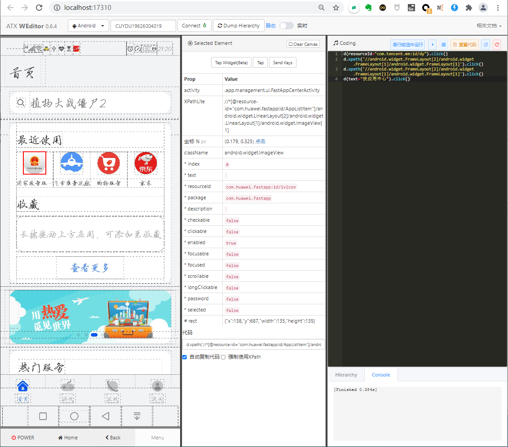
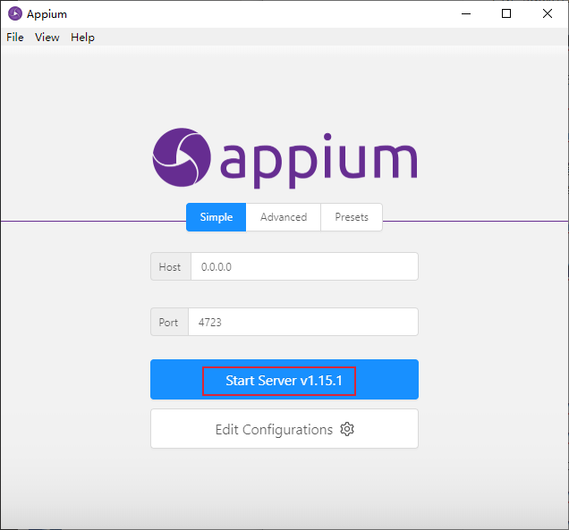
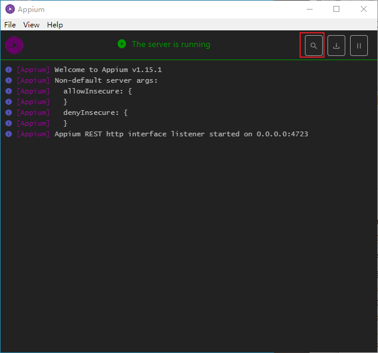
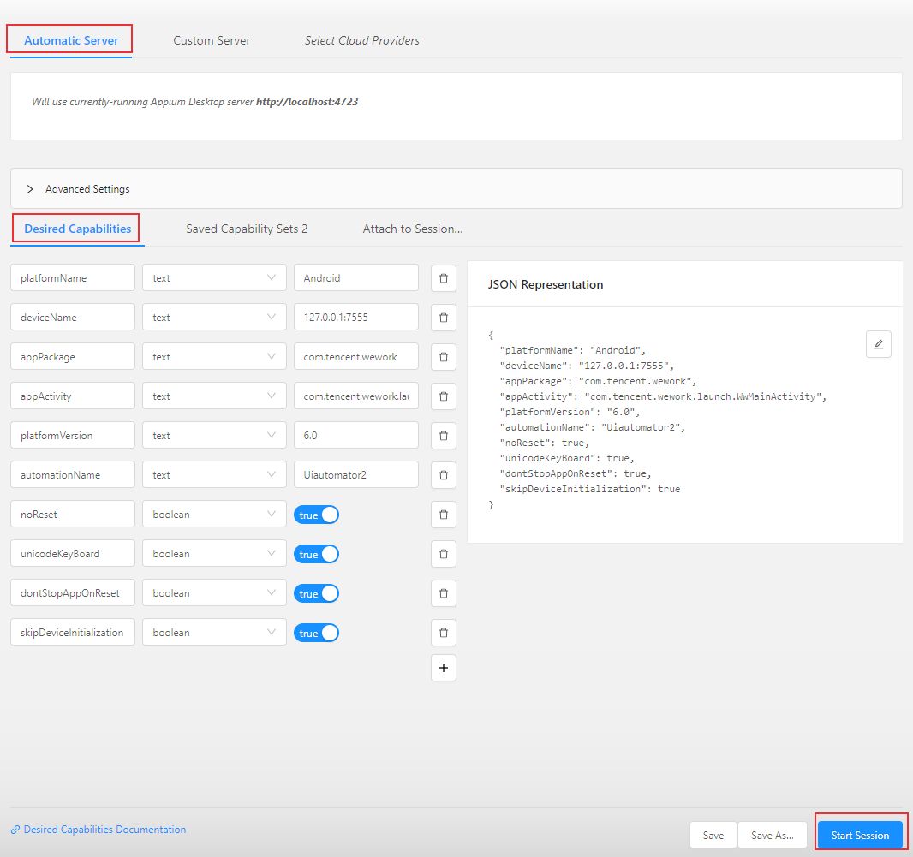
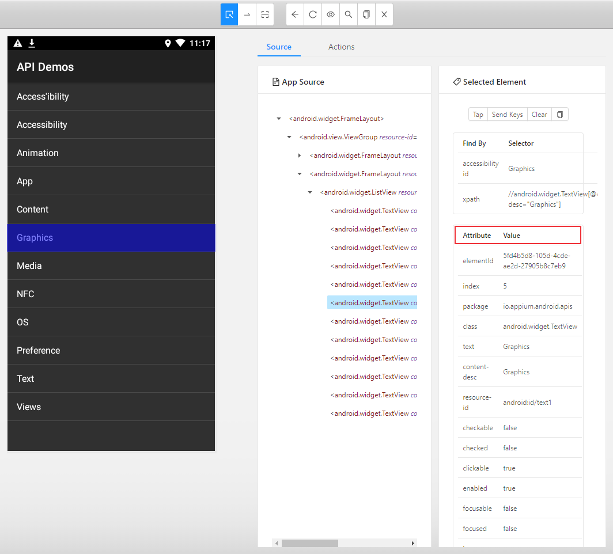
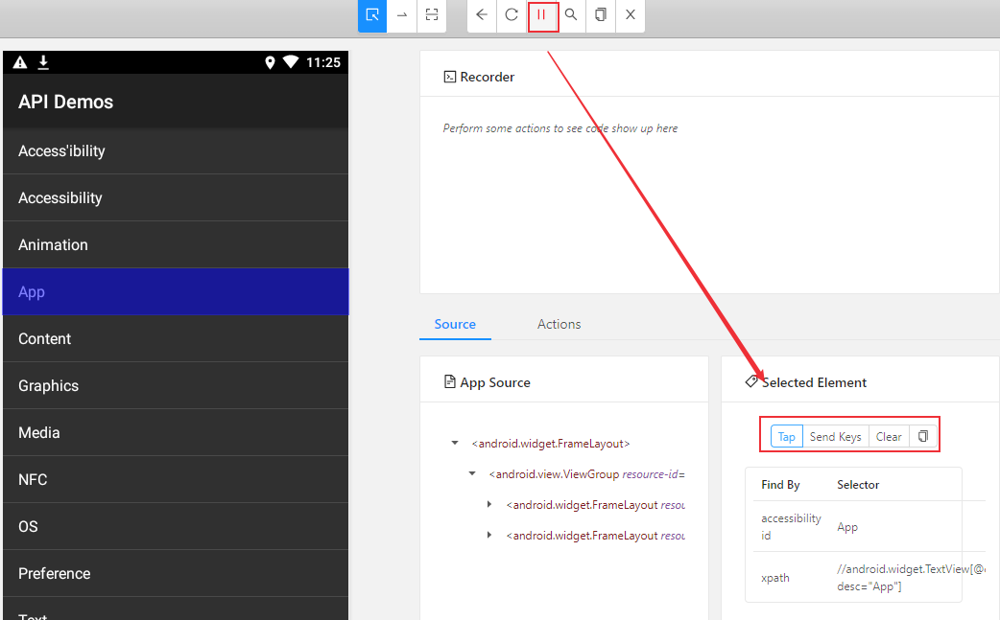
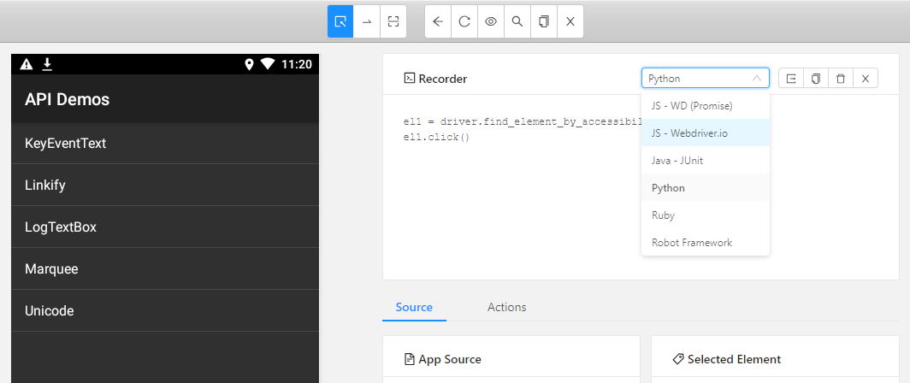

本文将分享Android相关基础知识和Android APP控件定位工具的使用方法。
Android基础知识
Android布局
Android是通过容器的布局属性来管理子控件的位置关系（iOS去掉了布局的概念，直接用变量之间的相对关系完成位置的计算），把界面上所有的控件根据他们的间距的大小，摆放在正确的位置。布局是一种可用于放置很多控件的容器，通过多层布局嵌套完成一些比较复杂的界面。
Android布局有LinearLayout(线性布局)、RelativeLayout(相对布局)、FrameLayout(帧布局)、AbsoluteLayout(绝对布局)、TableLayout(表格布局)、Grid layout(网格布局)、ConstraintLayout(约束布局)等。布局的内部除了放置控件外，也可以放置布局，通过多层布局的嵌套，我们就能够完成一些比较复杂的界面。

Android四大组件
Android四大基本组件分别是Activity，Service服务，Content Provider内容提供者，Broadcast Receiver广播接收器。
1、activity
- 与用户交互的可视化界面
- 一个Activity通常就是一个单独的屏幕（窗口）
- Activity之间通过Intent进行通信
2、Service
- service 实现后台运行程序，在后台完成用户指定的操作
- 通常用于为其他组件提供后台服务或监控其他组件的运行状态。
3、Content Provider
- content provider 内容提供者，提供程序所需要的数据
- 只有需要在多个应用程序间共享数据才需要内容提供者，是不同应用程序间共享数据的唯一方式。
4、Broadcast Receiver
- 监听外部事件的到来(比如来电)
Android控件
常用的控件：
TextView(文本控件)，EditText(可编辑文本控件)
Button(按钮)，imageButton(图片按钮)，ToggIeButton(开关按钮)
Image View(图片控件)
CheckBox(复选框控件), RadioButton(单选框控件)
元素定位实际上就是定位控件，Android应用的层级结构使用xml编写，xml全名叫可扩展标记语言，类似于HTML，可以看作一个微型的数据库。android系统里安装的每一个app，其信息都被存到一个xml里。
xml定义了节点和属性，每个控件都有它的属性(resourceid, xpath, aid)，没有css属性（样式文件和布局xml文件是分开的）。
Android中提供了三种解析XML的方式：DOM(Document Object Model)、SAX(Simple API XML)以及Pull解析方式。DOM解析器在解析XML文档时，会把文档中的所有元素按照其出现的层次关系，解析成一个个Node对象(节点)，形成Dom树。DOM允许用户遍历文档树，访问父节点、子节点或者兄弟节点。每个节点具有特定的属性：
- clickable
- content-desc
- resource-id
- text
- bounds
- …
App控件定位
对App控件的定位其实就是节点和属性的定位，下面介绍三种UI元素定位工具：
- Android App可以使用uiautomatorviewer工具进行定位，它是 sdk路径下的一个工具。
- 基于浏览器技术的weditor 工具
- Appium inspector工具
uiautomatorviewer定位
电脑通过无线或者USB连接到手机设备后（或者连接到模拟机），双击uiautomatorviewer.bat打开uiautomatorviewer工具。

点击左上角第二个或者第三个图标获取当前手机APP页面，在右边可以看到app的xml结构树，可以获取到每个节点的详细属性。

weditor
weditor是基于浏览器技术的UI查看器，直接在浏览器打开。
项目地址：https://github.com/alibaba/web-editor。
环境要求Python3.6+，通过pip安装：1
pip3 install -U weditor # 会安装uiautomator2和facebook-wda两个库，分别支持android和iOS APP。
在命令窗口输入如下命令运行：1
$ weditor # 启动server并打开浏览器
启动后会在浏览器自动访问 http://localhost:17310

如果你用appium编写APP自动化用例，而使用weditor来查看页面元素。在运行appium用例脚本时需要停止UiAutomator守护服务，因为UiAutomator相关进程会导致appium依赖的uiautomatorviewer 服务无法运行。
关闭方法参考文档 https://github.com/openatx/uiautomator2#stop-uiautomator 。
Appium inspector工具
打开appium，点击【启动服务器】

点击右上角搜索标志图标【Start Inspector Session】

编辑Desired Capabilities

Capability设置：https://appium.io/docs/en/writing-running-appium/caps/
- platformName：Android或者iOS
- deviceName：设备名，127.0.0.1:7555是网易mumu模拟器，开启后需要使用adb命令
adb connect 127.0.0.1:7555连接。 - appPackage：包名
- appActivity：Activity名字
- platformVersion：系统版本
- automationName：默认使用 uiautomator2(andorid默认使用 uiautomator2，ios默认使用 XCUITest)
- noReset：是否在测试前后重置相关环境(例如首次打开弹框，或者是登录信息)
- fullReset：
- unicodeKeyBoard：是否需要输入非英文之外的语言并在测试完成后重置输入法
- dontStopAppOnReset：首次启动的时候，不停止app(可以调试或者运行的时候提升运行速度)
- skipDeviceInitialization：跳过安装，权限设置等操作(可以调试或者运行的时候提升运行速度)
- newCommandTimeout：两条命令的最大间隔时间，默认60s
- udid：连接设备的唯一标识
- autoGrantPermissions：自动允许/拒绝弹框信息，默认为false，如果noReset为true时，这个参数不生效
其他更多参数参考官方文档：https://github.com/appium/appium/blob/master/docs/en/writing-running-appium/caps.md
主要设置好前面6个参数后，点击右下角【Start Session】，可以获取到每个节点的详细属性。

用例录制
appium desktop可以录制用例，并生成测试代码
点击上方眼睛图标，开始录制，手动点击左边app元素，右边显示了三种元素操作方法：Tap、Send Keys、Clear，选择对应的操作

完成后测试步骤后，点击停止录制，右上角可以看到生成的自动化代码，可以选择Java，Python等语言。

获取到app页面元素属性值后就可以使用appium来进行定位，实现对app的操作。下一篇文章将介绍appium元素定位方法。
Python + Appium启动APP
APP自动化测试关键步骤包括：
- 导入依赖:
from appium import webdriver - capabilities设置
- 初始化 driver
webdriver.remote('http://127.0.0.1:4723/wd/hub', desired_caps) - 元素定位与操作
- 断言 assert
下面代码实现打开雪球APP，点击输入框，输入”京东“，然后退出。
1 | #!/usr/bin/python3 |
本文标题:App控件定位：Android 控件介绍及元素定位方法
文章作者:hiyo
文章链接:https://hiyongz.github.io/posts/appium-android-controls/
许可协议:本博客文章除特别声明外，均采用CC BY-NC-ND 4.0 许可协议。转载请保留原文链接及作者。